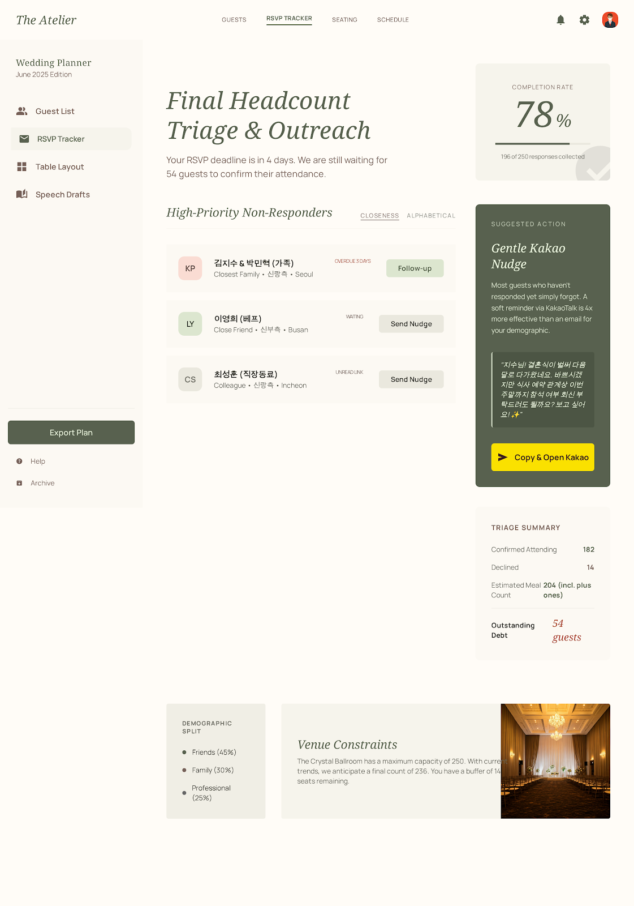

PF SAFE DEMO · 2026-03-17-p002
Wedding RSVP Follow-up Triage
Decide who to contact first before RSVP deadlines harden and guest uncertainty turns into planning risk.
ingest status
Imported from Stitch exportThe approved Stitch screen is now published through a local PF-safe viewer for stable build and preview generation.
- Source preserved as local artifact
- Public demo path avoids remote CDN dependency
- Preview uses the shipped Stitch screen
